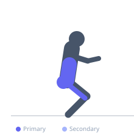
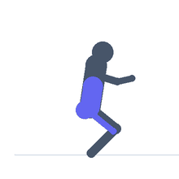

Exercise guide / Safety Squat Bar Good Morning — Pause on Pins
Safety Squat Bar Good Morning — Pause on Pins
A good morning variation performed with a safety squat bar (SSB) and a pause against power rack safety pins at the bottom of the range. The SSB's camber places the load in front of the lifter's center of mass, increasing the moment arm on the lower back compared to a straight bar good morning. The pause against the pins at the bottom eliminates the stretch reflex, requiring the posterior chain to initiate the ascent from a dead stop. This is an advanced posterior chain developer used in powerlifting accessory programming.
Primary muscles
erector spinae
gluteus maximus
biceps femoris long head
Secondary muscles
semitendinosus
adductor magnus
Stabilizers
transverse abdominis
Equipment
Safety Squat Bar
Power Rack (Squat Cage)


Starting position
- Set up in a power rack with the safety pins at the height where the SSB bar makes contact when the torso is at approximately parallel to the floor. Load the SSB and unrack it. Stand with feet hip-width, slight knee bend.
Setup
- Set the safety pins to touch the bar when the torso reaches the target hinge angle (typically parallel or slightly below). Never let the spine round to reach the pins — set them at the appropriate height for your current flexibility.
Steps
- Step 1: Unrack the SSB and brace the core. Begin with a slight knee bend.
- Step 2: Hinge at the hip, keeping the spine rigid and neutral, until the bar makes contact with the safety pins.
- Step 3: Fully relax the bar weight onto the pins for 1-2 seconds (this removes the stretch reflex).
- Step 4: Rebrace and drive the hips forward to extend back to standing. The concentric begins from a dead stop.
Coaching cues
- Hinge like you're trying to push your hips to the wall behind you — not just bow forward
- During the pause: fully release the tension and let the bar rest on the pins before rebuilding your brace
- Drive the floor away with the feet to initiate the ascent from the dead stop
Breathing
- Inhale and brace before hinging. Take a secondary brace during the pause. Exhale forcefully during the ascent.
Range of motion
- Hinge until the bar contacts the pins — this is set by pin height, not by flexibility. Work within a pain-free range.
Tempo
- 3s eccentric, 2s full pause on pins, 2s concentric drive
Common mistakes
- Rounding the lower back to reach the pins — set the pins higher if this occurs
- Using the bounce off the pins rather than pausing fully
- Using the SSB's yoke to assist the lift — the arms should remain relaxed on the bar handles
Safety
- This is an advanced exercise requiring a thorough understanding of the hip hinge pattern before loading
- Start light — the SSB increases the moment arm compared to straight bar good mornings
- Never set pins so low that lumbar rounding is required to reach them
Training
- strength: 2–5 reps
- hypertrophy: 5–8 reps
- strength: 3–5 sets
- hypertrophy: 3–4 sets
- Rest: {'strength': 180, 'hypertrophy': 120}